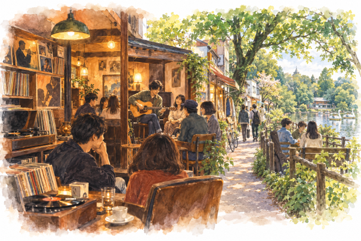

英語で読む、日本の街と文化
音楽と出会いが育てた街 吉祥寺
若者が集まり、新しい文化が生まれた場所

東京の吉祥寺は、若者が集まる「住みたい街」として人気があります。その魅力を育てたのが、音楽や人との出会いでした。1960年に開店したジャズ喫茶「ファンキー」には、新しい海外のレコードを聴こうと学生たちが集まりました。店主が次々に開いた個性的な店は、若者が自分の店を持つきっかけにもなりました。
1970年には、フォーク音楽を楽しむ「ぐゎらん堂」が誕生。歌手や漫画家、学生たちが集まり、古い考え方に疑問を持ちながら、新しい時代をつくろうとしていました。また、1975年から放送されたドラマ『俺たちの旅』が、井の頭公園や商店街で過ごす若者の姿を全国に伝え、街への憧れを広げました。
今は大型店やチェーン店が増え、若者が店を開くのは難しくなっています。それでも魅力的な店は残っています。吉祥寺の魅力は、買い物の便利さだけでなく、人が集まり、新しい文化を生み出してきた歴史にもあるのです。
出典 提供記事「History, culture bring youth to Tokyo's Kichijoji」2026年8月31日付 本文をもとに要約
🔤 英語でひとこと
英単語をクリック（スマホはタップ）すると、日本語が出てきます。
.
日本語訳をひらく
吉祥寺が特別なのは、人々がそこに集まり、新しい文化を生み出してきたからだ。
語句の解説
- A is special because ～
- 「Aが特別なのは、～だからだ」。because のあとに、その理由を書きます。
- gathered there
- 「そこに集まった」。gather は「集まる」。there（そこに）は吉祥寺のこと。ジャズ喫茶やフォークの店に、学生や歌手が集まりました。
- created new culture
- 「新しい文化を生み出した」。create は「（今までなかったものを）つくり出す」。culture（文化）は数えないことばなので、a はつけません。